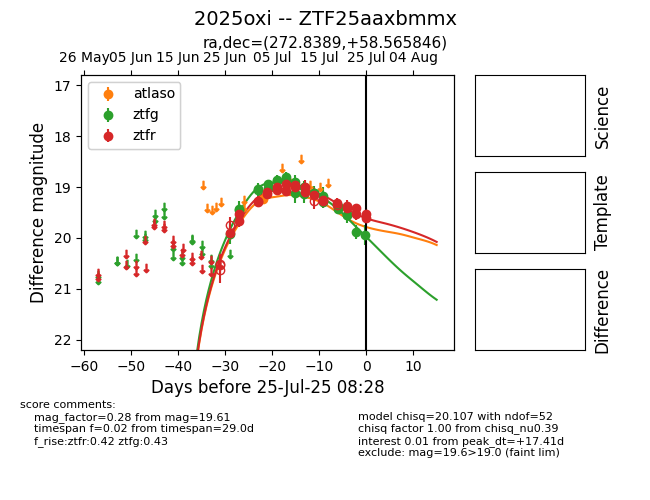

Target 2025oxi at 2025-07-25 08:28, see:
FINK: fink-portal.org/2025oxi
Lasair: lasair-ztf.lsst.ac.uk/objects/2025oxi
ALeRCE: alerce.online/object/2025oxi
TNS: wis-tns.org/object/2025oxi
YSE: ziggy.ucolick.org/yse/transient_detail/2025oxi
alt names
ZTF25aaxbmmx (ztf,fink)
2025oxi (tns,yse)
coordinates:
equatorial (ra, dec) = (272.8389,+58.56585)
galactic (l, b) = (87.3568,+28.02300)
photometry
last atlaso=19.23, ztfg=19.94, ztfr=19.61
1 atlaso, 24 ztfg, 25 ztfr detections
